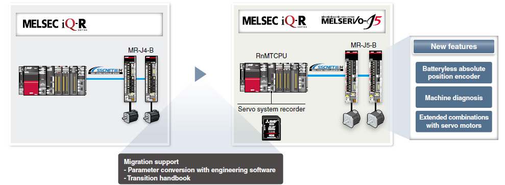
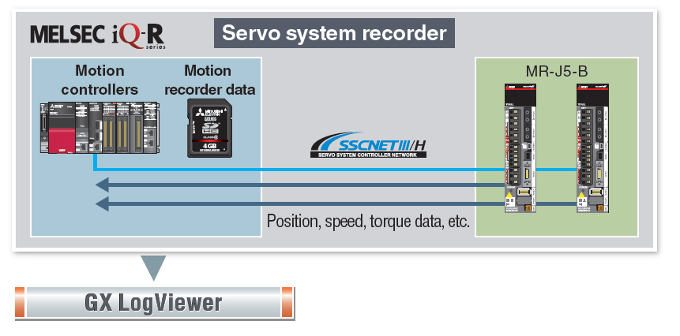
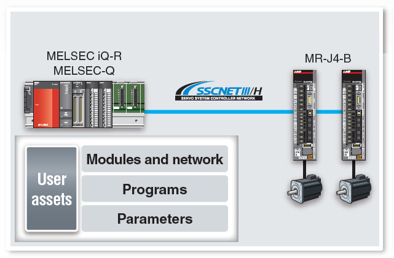
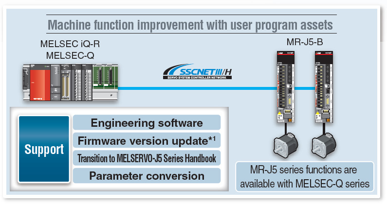

MELSERVO-J5 Series Servo Amplifier Warisan

Sistem Servo yang Kompatibel dengan SSCNET III/H
- Penguat servo memungkinkan pengguna untuk membangun sistem yang memanfaatkan aset pengontrol sistem servo yang ada. Parameter servo diubah saat penguat servo diubah pada perangkat lunak rekayasa.
- Pengendali gerak seri MELSEC iQ-R dilengkapi dengan perekam sistem servo, yang membantu menemukan penyebab saat terjadi masalah.
Memanfaatkan Fungsi Seri MELSERVO-J5
- Penguat servo mendukung fungsi seri MELSERVO-J5 seperti penyetelan cepat, diagnosis mesin, dan kombinasi fleksibel penguat servo dan motor servo.
- Motor servo dengan enkoder posisi absolut tanpa baterai dapat dioperasikan.

Perekam Sistem Servo
Modul Gerak seri MELSEC iQ-R mengumpulkan data penguat servo saat terjadi kesalahan.

Transisi dari MELSERVO-J4 ke J5
Penguat servo MR-J5-B/MR-J5W-B dapat terhubung ke SSCNET III/H dan memanfaatkan aset program yang ada untuk meningkatkan kinerja mesin.
Transisi dari seri MELSERVO-J4 ke MELSERVO-J5 didukung.

▶
▶
▼

*1Pengontrol Gerak dengan firmware yang diperbarui mendukung MR-J5-B.